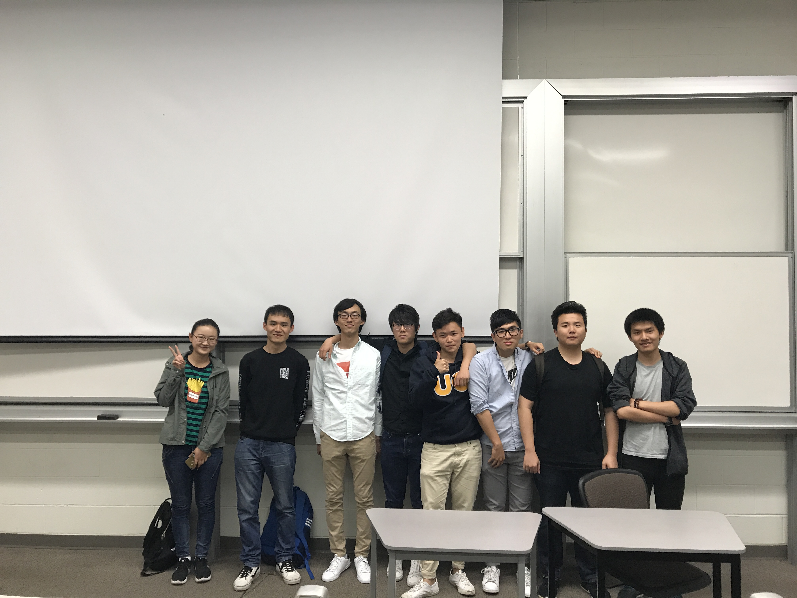
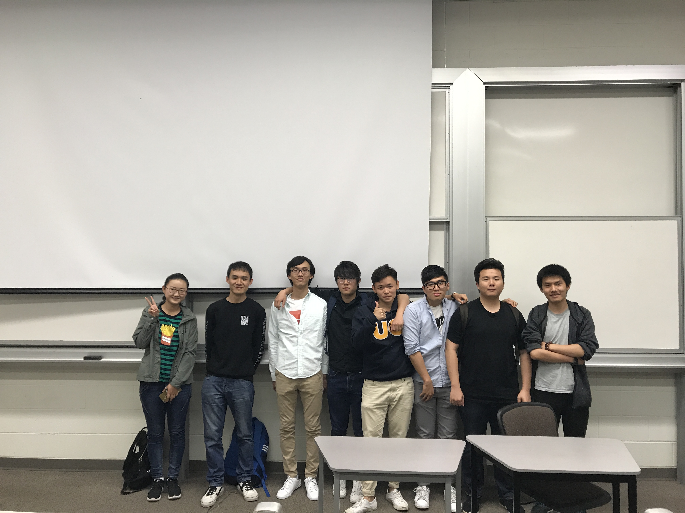

学术部
Department of Academic
选择标签 | filter
记录
ICS 32 Review Night 圆满举行
07/30/2017
在Spring Quarter Week 10 的星期三，CUCS学术部为各位ICS32的同学带来了一场别开生面的Review Session，与同学们分享了学习和备考的经验，收到了良好的反馈。
Department of Academic
在Spring Quarter Week 10 的星期三，CUCS学术部为各位ICS32的同学带来了一场别开生面的Review Session，与同学们分享了学习和备考的经验，收到了良好的反馈。
